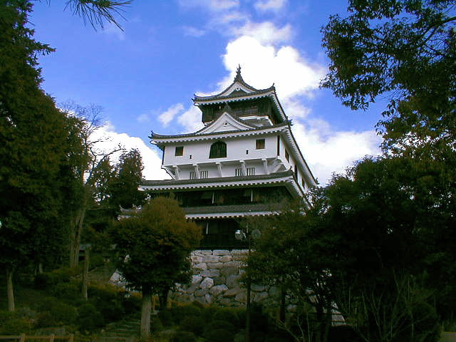
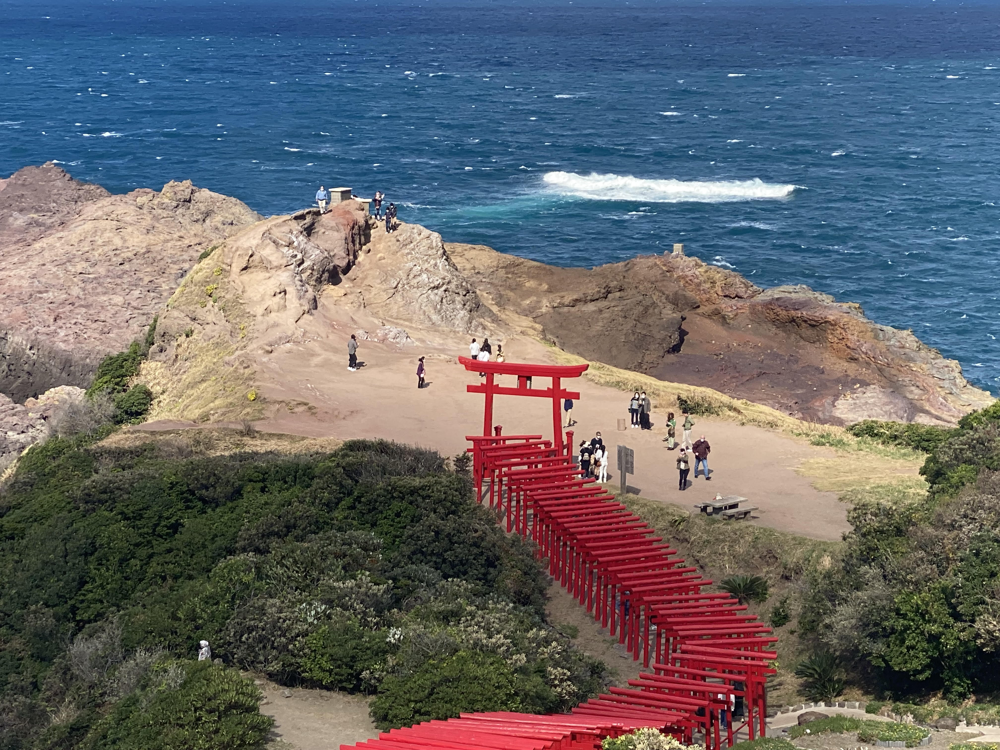

Nice to meet you!
「日本三名橋」の一つであり国内屈指の木造橋です。世界遺産を目指す名橋であり、歴史性もあり世界でもめずらしい木のアーチ構造の美しさはみごたえがあります。「岩国城」や「吉香公園」など、城下町の風情あふれる錦帯橋周辺の散歩は春の花見シーズンが、お勧めです。
日本国内で米軍基地に民間機の定期便が就航するのは三沢飛行場（アメリカ空軍三沢基地）に次いで2例目、山口県内では山口宇部空港に次いで民間機が就航する空港となりました。
航空祭にはアメリカ海軍・海兵隊に日本の陸・空・海の自衛隊が参加し、多種多様な航空機を実際に見ることが出来ます。
岩国を拠点とする第五空母航空団の主力戦闘機F/A-18E/Fの展示飛行、米海兵隊の第12飛行大隊所属の最新鋭のステルス戦闘機F35Bの展示飛行の他、日・米の多彩な航空機の地上展示等充実の内容です。
江戸幕府が制定した「一国一城令（居城以外のすべての城の破却を命じた令）」により取り壊され、現在の白壁の美しい造りに再建された天守閣。 山頂に立つ城の展望台から眼下に広がる錦帯橋や岩国の城下町は絶景です。晴れた日には瀬戸内海の島々、宮島まで見渡すことができます。 展望台から望む錦帯橋もおすすめですが、橋側から見る天守閣の姿も格別。撮影スポットとしても人気です。 秋は紅葉が美しく、岩国城と錦帯橋の幻想的なライトアップも神秘的です。
123基の赤鳥居が海に向かって並ぶ絶景神社。 元乃隅神社(もとのすみじんじゃ)は、昭和30年に、地域の網元であった岡村斉（おかむらひとし）さんの枕元に現れた白狐のお告げにより建立されました。 昭和62年から10年間かけて奉納された123基の鳥居が100ｍ以上にわたって並ぶ景色はまさに圧巻！。山口県屈指の絶景スポットとして人気があります。 神社のご利益としては商売繁盛や大漁・海上安全をはじめ、良縁、子宝、開運厄除、福徳円満、交通安全、学業成就など様々な願いごとができます。 敷地内にある高さ約6ｍの大鳥居の上部に賽銭箱が設置されており、見事に賽銭を投げ入れて、願い事を叶えてください。
